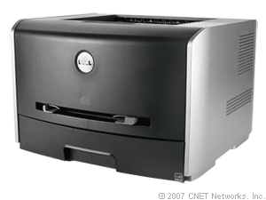

Dell 1720 mono laser printer
http://reviews.cnet.com/laser-printers/dell-1720-mono-laser/4505-3159_7-32390435.html

Samsung ML-2571N
$99.99 - $258.58
Samsung ML-2010D3 Compatible Toner Cartridge for ML-2010, ML-2510, ML-2570, ML-2571N Laser Printers (ML2010/ML-2010/ML2010D3)
http://www.amazon.com/ML-2010D3-Compatible-Cartridge-ML-2571N-Printers/dp/B001D71MTC/ref=sr_1_1?ie=UTF8=electronics=1219599068=1-1
INK for printer Samsung ML-2571N